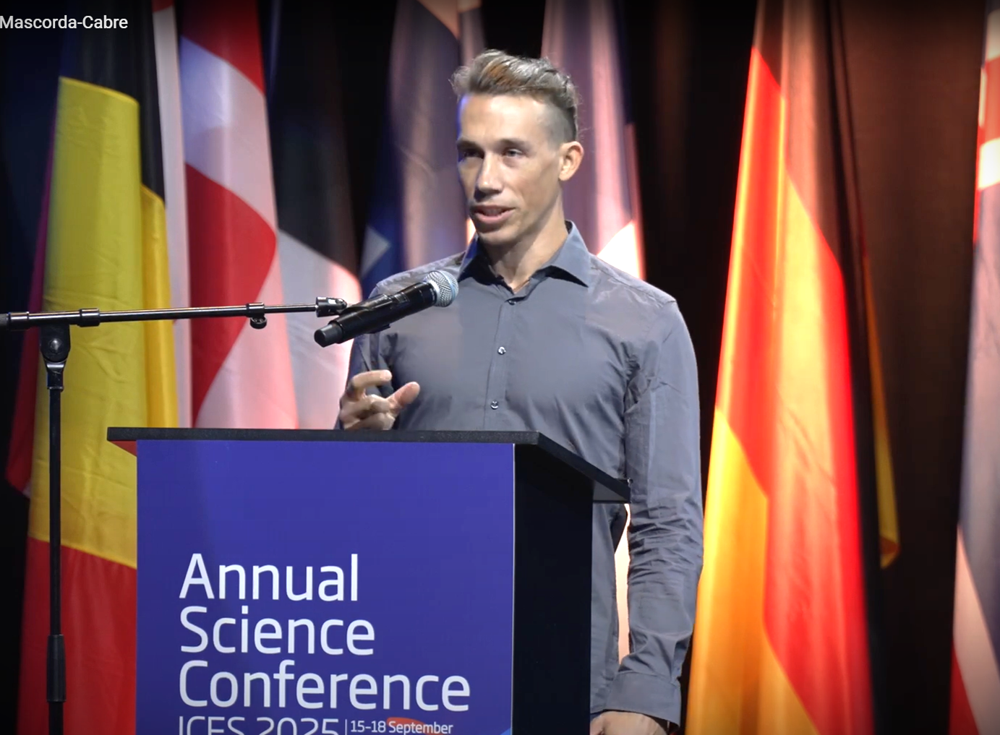
DANIEL OTTMANN
MARINE BIOLOGY - ECOLOGY
I am a marine biologist with broad views in ecology. I have specialized in solving ecological questions by combining mechanistical models with statistical analyses of biological and oceanographic data. I am a proactive coworker, engaging in team building activities and fostering a positive working environment. last update: October 2025
PEER–REVIEWED PUBLICATIONS
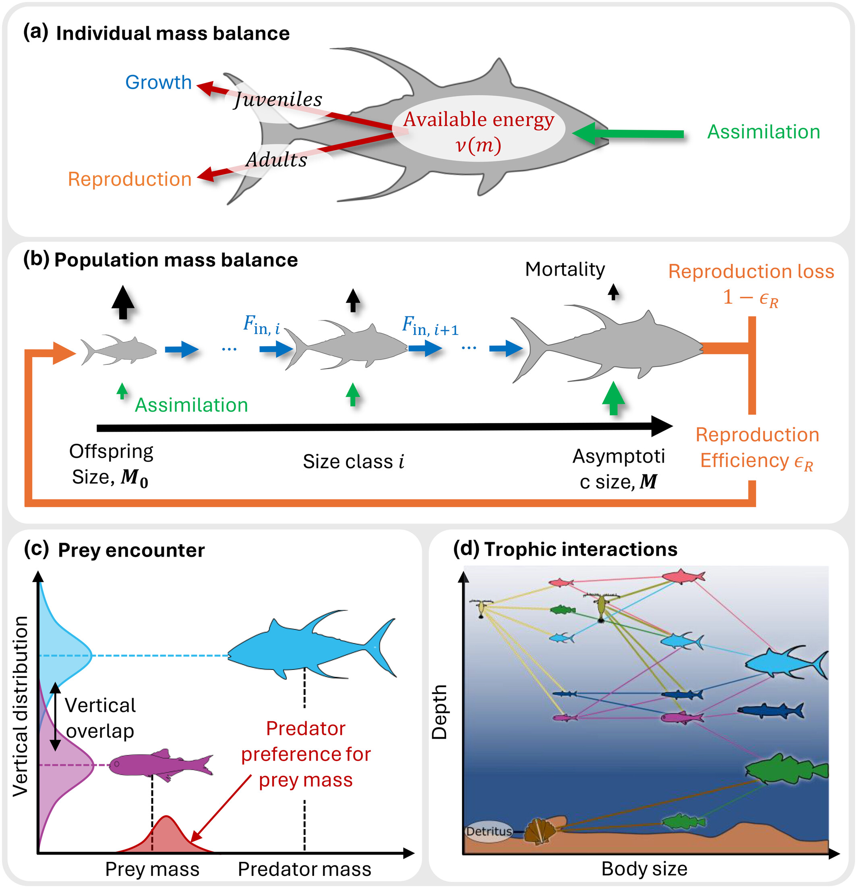
Abstract: The FishErIes Size and functional TYpe model (FEISTY) is a mechanistic ecosystem model that fully integrates ecosystem structure across trophic levels through functional types. We present an R package that enables users to run simulations ranging from a 0D chemostat to full global scales. The library is written in Fortran90 with an R interface and provides a web application for visual exploration. We present and compare results from four core configurations across a range of depths, productivity and fishing levels, and we assess the convergence of solutions as the number of size classes is increased. The model has historically been coupled to biogeochemical models of mesozooplankton and detritus production, but it can also be applied in a stand-alone version. We demonstrate the library to set up and simulate fish communities under varying productivity of mesozooplankton and benthos, and top-down forcing from fishing. We outline three strategies for coupling FEISTY with biogeochemical model output and discuss future directions and open issues.
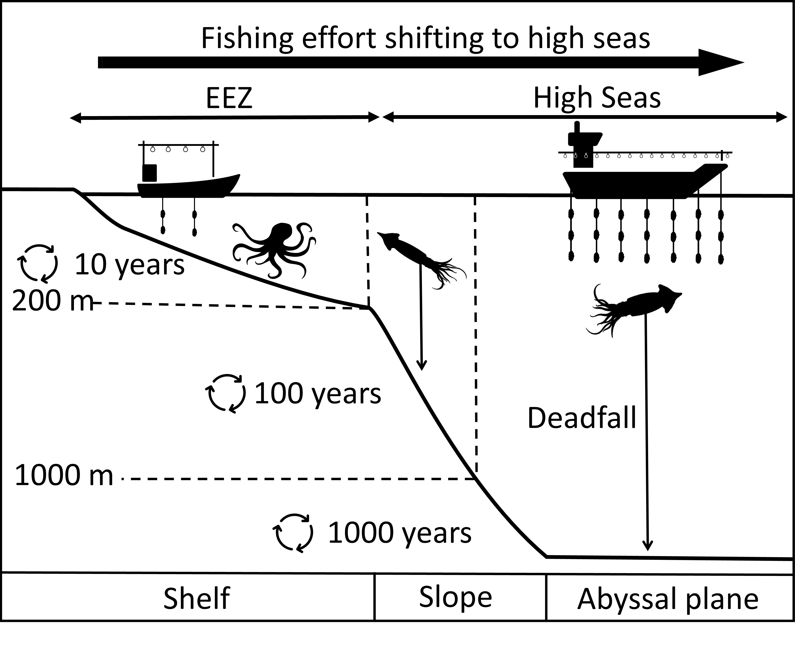
Abstract: Fish and other metazoans play a major role in long-term sequestration of carbon in the oceans through the biological carbon pump. Recent studies estimate that fish can release about 1,200 to 1,500 million metric tons of carbon per year (MtC year-1) in the oceans through feces production, respiration, and deadfalls, with mesopelagic fish playing a major role. This carbon remains sequestered (stored) in the ocean for a period that largely depends on the depth at which it is released. Cephalopods (squid, octopus, and cuttlefish) have the potential to sequester carbon more effectively than fish because they grow on average five times faster than fish and they die after reproducing at an early age (usually 1–2 years), after which their carcasses sink rapidly to the sea floor. Deadfall of carcasses is particularly important for long-term sequestration because it rapidly transports carbon to depths where residence times are longest. We estimate that cephalopod carcasses transfer 11–22 MtC to the seafloor globally. While cephalopods represent less than 5% of global fisheries catch, fishing extirpates about 0.36 MtC year-1 of cephalopod carbon that could otherwise have sunk to the seafloor, about half as much as that of fishing large fish.
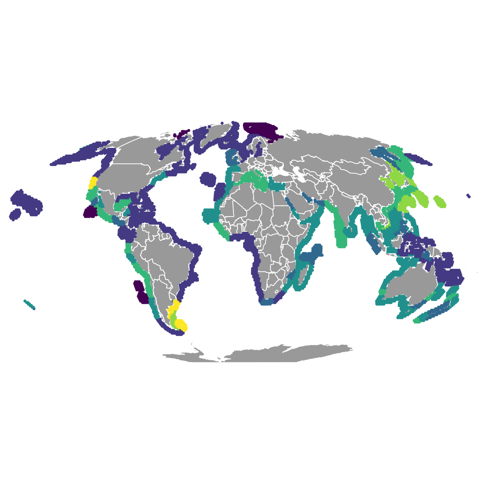
Abstract: Aim: We evaluate whether the biomass and trait biogeography of cephalopods follow the distribution expected by metabolic theory for ectotherms with rapid growth and high metabolic rate. Location: Continental shelves of the North Atlantic and Northeast Pacific oceans; global marine ecoregions. Time Period: 1968–2020. Major Taxa Studied: Cephalopods and fishes (Chondrichthyes and Osteichthyes). Methods: We map the biomass of cephalopods and their traits across marine shelves using scientific bottom trawl survey data from the North Atlantic and Northeast Pacific. We further map global fisheries catch. We apply statistical methods to evaluate how temperature, zooplankton productivity and depth drive these patterns. Resulta: Cephalopods represent a small fraction (1%) of the combined fish and cephalopod biomass on continental shelves. However, their distribution displays a high regional heterogeneity, with some areas being virtually absent of cephalopods and other areas accounting for up to 24% of total biomass. Higher temperatures and zooplankton productivity are associated with increased cephalopod biomass and proportional biomass relative to fish. The largest cephalopods are found in the Northeast Pacific. Growth rates are highest in warmer waters with fastest growth rates found in lower latitudes of the North Atlantic. Cephalopods constitute 5% of the combined fish and cephalopod global fisheries catch. This proportion varies across regions. Higher temperature and zooplankton productivity are associated with increased cephalopod catch relative to fish. Main Conclusions: Temperature and productivity shape the large-scale biogeography of cephalopods and their traits on marine shelves. The relations with temperature suggest that future warming could lead to a proliferation of fast-growing cephalopods in cold and temperate systems, with implications for ecosystem dynamics and fisheries. Despite a relatively low observed biomass, cephalopods hold substantial potential to change ecosystem structure and functioning given their high energy lifestyle.
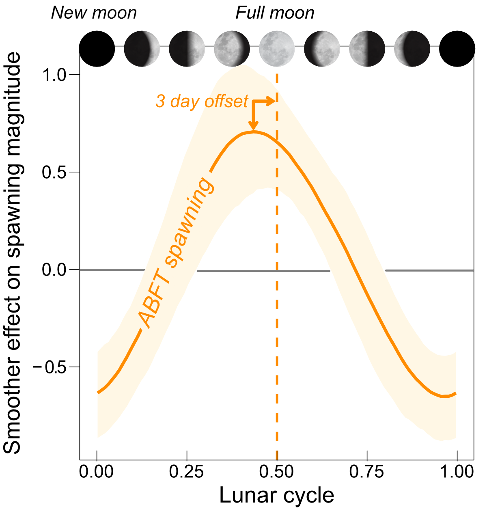
Abstract: Most mesopelagic fish are small planktivores that migrate up at nightfall to feed in the safety of darkness and descend to depth at dawn to escape visual predators. However, the trophic roles can reverse since mesopelagic fishes also predate eggs and larvae of their predators. We use the Atlantic bluefin tuna as a model species to test the hypothesis that fishes in the open ocean synchronize spawning to moon-lit nights (when mesopelagic fishes avoid near-surface waters) to increase offspring fitness. Our analysis over two decades of field observations shows that tuna spawn most intensively the week before full moon. This fits predictions from a mechanistic model where spawning around full moon increases offspring fitness by two orders of magnitude due to low predation from mesopelagic fishes. Circalunar patterns of food availability can also favor fitness of offspring spawned the days before full moon. Our findings suggest that mesopelagic fishes may have an important impact on pelagic fish through predation of early life stages and cause an evolutionary drive to synchronize spawning to the lunar cycle.
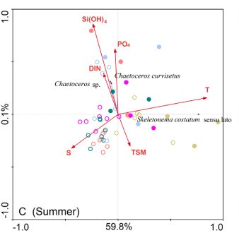
Abstract: Nuclear power plants (NPPs) developed rapidly worldwide in the last half-century and have become one of the most important electric power sources. Thermal discharge from NPPs increases the temperature of receiving waters, directly and indirectly affecting phytoplankton community. Seasonal and interannual variation in environmental factors in temperate areas makes it challenging to determine the effects of thermal effluents from NPPs on coastal phytoplankton. Here, a five-year study was performed around a NPP in the western Yellow Sea to determine how thermal effluents affect phytoplankton community during different seasons. A total of 106 phytoplankton species from 7 phyla were identified in 10 biological sites during the 19 cruises, among which diatoms dominated phytoplankton abundance in all seasons. Our results show that increased seawater temperature caused by thermal effluents (1) was not enough to cause a statistically significant effect on phytoplankton abundance composition from autumn through spring, (2) significantly stimulated phytoplankton population growth and changed phytoplankton composition in summer (3) increased the proportion of diatoms and decreased the proportion of dinoflagellate in summer, and (4) increased the abundance and dominance of Skeletonema costatum sensu lato, especially in summer. The findings of this study provide essential information on the ecological impact of thermal effluents from NPPs in temperate coastal areas.
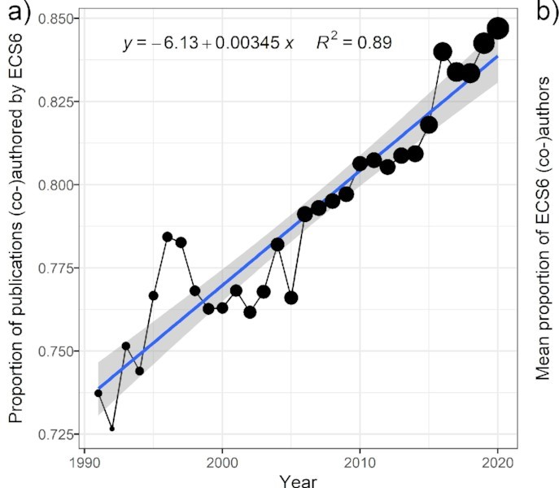
Abstract: Scientific careers and publishing have radically changed in recent decades creating an increasingly competitive environment for early career scientists (ECS). The lack of quantitative data available on ECS in marine and fisheries sciences prevents direct assessment of the consequences of increased competitiveness. We assessed the contributions of ECS (up to 6 years post first publication) to the field using an indirect approach by investigating the authorships of peer-reviewed articles. We analysed 118461 papers published by 184561 authors in the top 20 marine and fisheries sciences journals over the years 1991–2020. We identified a positive long-term trend in the proportion of scientific articles (co-)authored by ECS. This suggests a growing contribution by ECS to publications in the field. However, the mean proportion of ECS (co-)authors within one publication declined significantly over the study period. Subsequent tests demonstrated that articles with ECS (co-)authors receive fewer citations and that the proportion of ECS (co-)authors on an article has a significant negative effect on the number of citations. We discuss the potential causes of these inequalities and urge systematic support to ECS to achieve more balanced opportunities for funding and publishing between ECS and senior scientists.
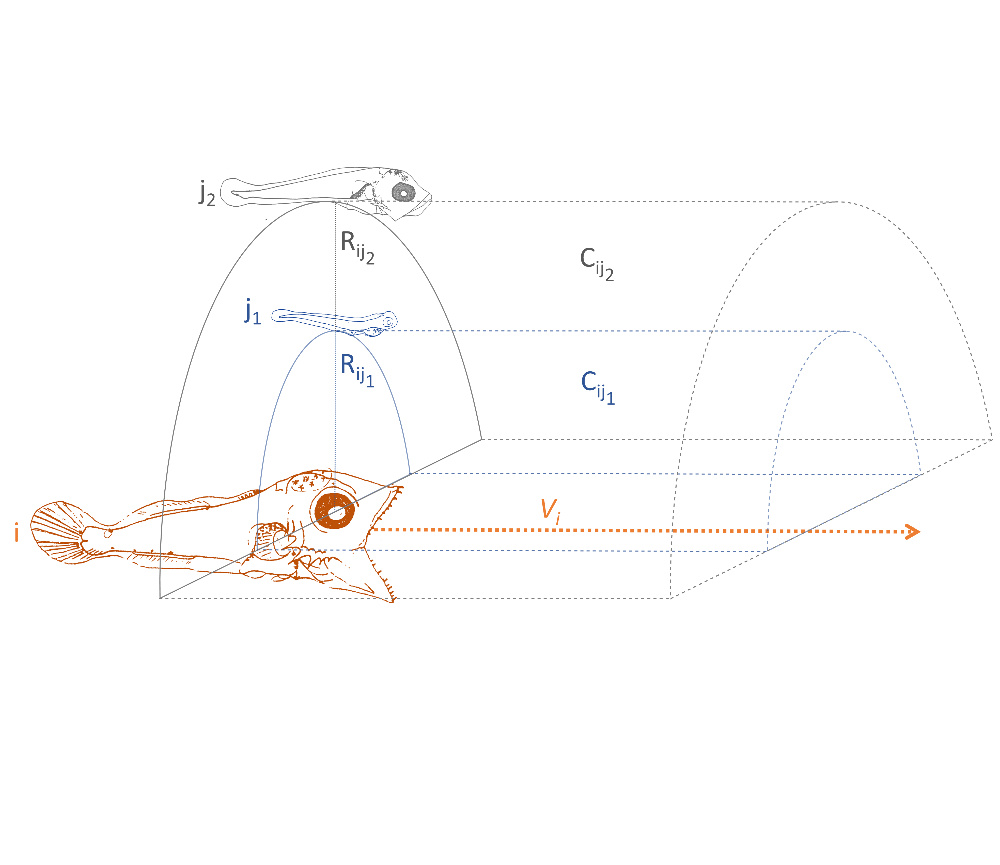
Abstract: Fish larvae are rarely a major driver of fish mortality, but tunas can produce large batches of larvae that rapidly develop the capacity to kill other fish. We combine a model for the killing potential from Atlantic bluefin tuna (BFT) larvae on larval albacore (ALB) with field observations at a major spawning ground. Both species spawn from June to August, but BFT has a narrow spawning peak at the beginning of the season that results in priority effects. Our model shows that, following a recent stock recovery, BFT larvae have increased their killing pressure, leaving areas of up to 1000 km2 with < 1% chance of ALB daily survival. Such increase in killing pressure suggests larval ALB has reduced chances to survive; yet in large areas with few BFT, other drivers of early survival prevail over BFT predation. This shows that strong predatory interactions can occur during larval stages in some fishes.
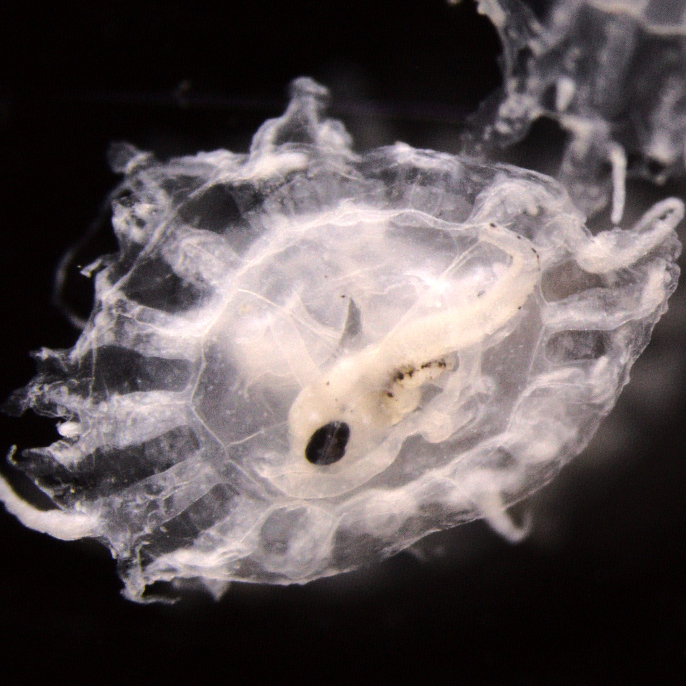
Abstract: Recruitment success of marine fishes is generally considered to be highly dependent on larval growth and survival. In temperate ecosystems, fish larvae are sensitive to food limitation during the low productivity seasons, particularly if water temperatures and concomitant larval metabolic costs increase due to climate change. We combined 7 years of in situ sampling of larval fish, novel observations on zooplankton via automated image analyses, and larval physiological modeling to explore feeding conditions of Atlantic herring larvae (Clupea harengus) in the North Sea. The observed plankton size-structure was close to the theoretical optimum for larval foraging, but not the biomass. Our results for autumn larvae supported Hjort's critical period hypothesis: small first-feeding larvae were predicted to have a high probability of starvation, whereas larvae > 13 mm were able to reach their maximal growth capacity. In winter, the majority of herring larvae of all tested sizes (5–27 cm) experienced food-limitation with over 35% probability of starvation. Sensitivity analysis suggested that young herring larvae improve their growth performance and probability of survival if feed not only on copepods and their life-stages but include other microplankters in their diet. Given projected warming of the North Sea, our model predicts that herring larvae would require 28% (35%) more prey biomass in autumn (winter) to sustain their growth and survival in the future. This finding together with the ongoing low recruitment of North Sea herring underscore the importance of future micro- and mesoplankton monitoring within a scope of wintertime larval fish surveys.
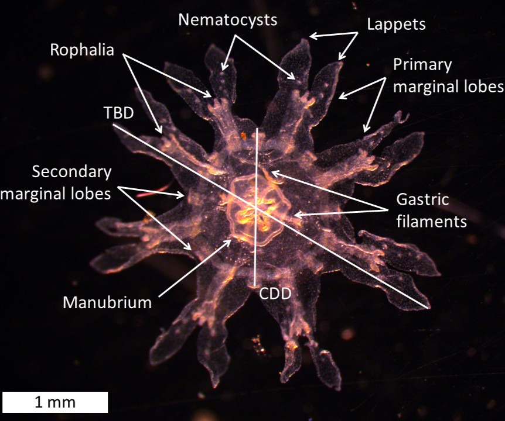
Abstract:Understanding processes occurring in the different life stages of jellyfish is key to advance knowledge on their trophic interactions and population dynamics. We describe four developmental stages of Pelagia noctiluca ephyrae and metaephyrae based on the progress of feeding structures and morphometric measurements on the central disc diameter and total body diameter. Size differs significantly among stages, but it can overlap substantially, suggesting that it is not always coupled with development progress due to different somatic growth. Morphological distinction of stages is biologically important because it implies different levels of food specialization and capture efficiency. We further report a 25% (±13 SD) shrinkage of ephyrae and metaephyrae after storage in 4% formaldehyde solution. This metric can be used in ecological studies focusing on size-related traits of field observed individuals.
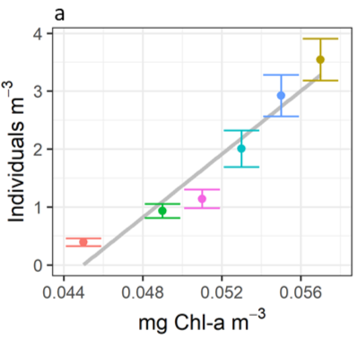
Abstract: Pelagia noctiluca is the most successful and well-studied jellyfish in the Mediterranean Sea. This species tolerates a wide range of water temperatures and succeeds in low to medium food regimes, but factors driving its distribution and population dynamics remain poorly understood. Here we applied a multiscale analytical approach using survey data and a physical-biochemical coupled model to assess how environmental factors affect the 3-dimensional distribution and seasonal abundance of P. noctiluca early life stages. The surveys took place after the spring bloom, when warm water favors fecundity and growth, but food shortage limits the reproductive investment and early survival. We found that most early life stages of P. noctiluca remained above the shallow thermocline and upper mixed layer where temperature is warm. Their spatial distribution was positively correlated with surface chlorophyll concentration, and over 90% of the variation in interannual abundance was explained by basin-scale productivity in June. Warmer water during winter and spring seasons coupled with protracted spring blooms increase the population of P. noctiluca, and this explains the trend of increasing outbreaks observed in the western Mediterranean Sea over the past decades.
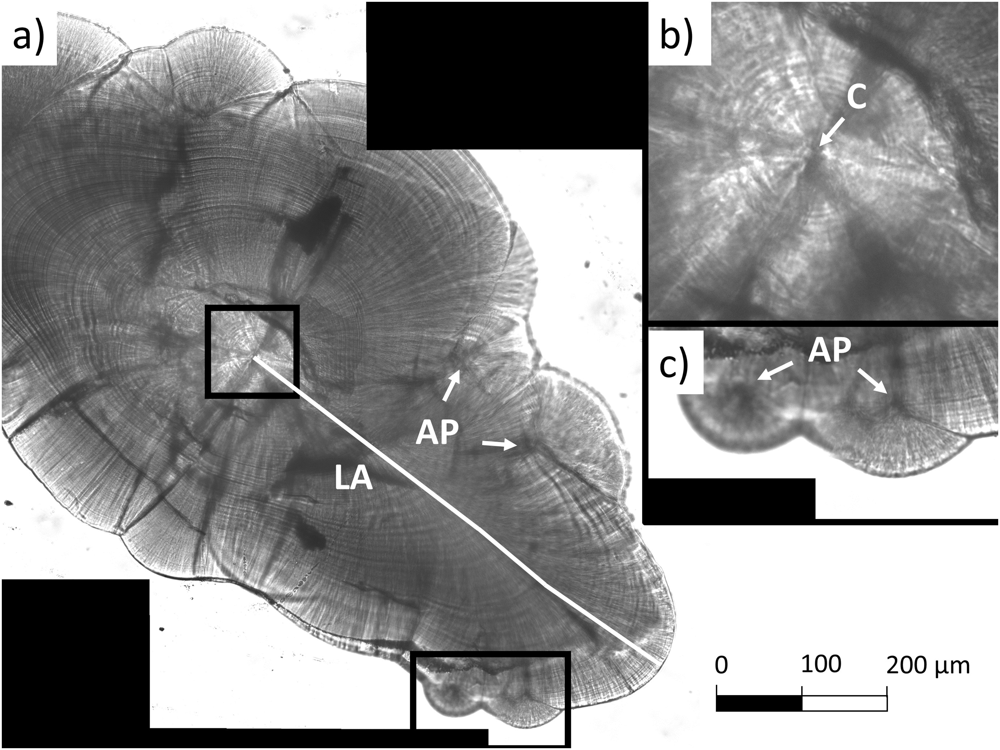
Abstract: Growth is key to the survival of fishes during their early life and ultimately affects annual recruitment to adult populations. To evaluate early life history traits of two commercially harvested fishes, splitnose (Sebastes diploproa) and redbanded (S. babcocki) rockfishes, we examined the otolith microstructure of juveniles of both species that settled simultaneously in an unusually large settlement pulse. Although overall growth during the dispersal phase was similar for both species, splitnose rockfish were ~2 wks younger and smaller in length at time of sampling, encompassed a narrower age range, and had higher prevalence and earlier occurrence of accessory primordia in their otoliths. Despite almost identical morphological traits of juveniles, our results suggest different pelagic strategies. The otoliths of splitnose rockfish grew faster during a 30-d period, reflecting either faster somatic growth during this period or a different rate of otolith deposition.
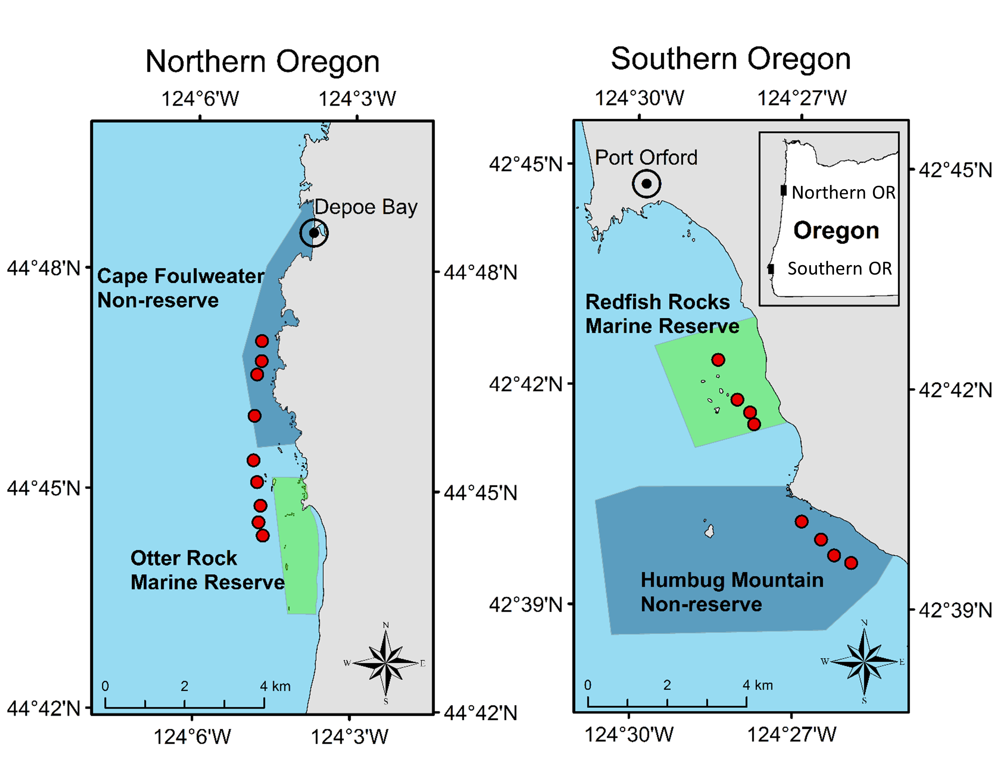
Abstract: For most benthic marine organisms, settlement of pelagic offspring to bottom-associated habitats is a necessary step in the replenishment of adult populations. Quantifying spatial and temporal variation in settlement is therefore important to fully understand population dynamics, inform fisheries management targets, and design effective spatial management strategies. Data on nearshore patterns of fish settlement are lacking for the northern California Current System (CCS), which is characterized by complex oceanographic currents and a seasonal, intermittent upwelling regime. Thus, to quantify spatial and temporal patterns of fish settlement in the northern CCS in relation to oceanographic conditions, we measured settlement of 5 fish taxa to 2 regions of the Oregon coast over 5 settlement seasons (late spring to early fall, 2012-2016). Temporal patterns of settlement reflected taxon-specific degrees of episodic settlement, with cabezon Scorpaenichthys marmoratus exhibiting the most uniform settlement across each season, and splitnose Sebastes diploproa and redbanded S. babcocki rockfishes exhibiting the most episodic settlement. Fish settlement tended to be greater during short periods of downwelling (upwelling relaxation events) for all but the largest fish taxa. Within settlement season, variation in size-at-settlement tracked taxon-specific temporal patterns of arrival but was unrelated to water temperature. Differences in fish settlement between small marine reserves and nearby unprotected areas was region- and taxon-specific, highlighting the fact that size and habitat heterogeneity should be considered in the design of marine reserves. These findings provide a deeper understanding of settlement patterns across the mosaic of environmental variability in eastern boundary currents such as the CCS.
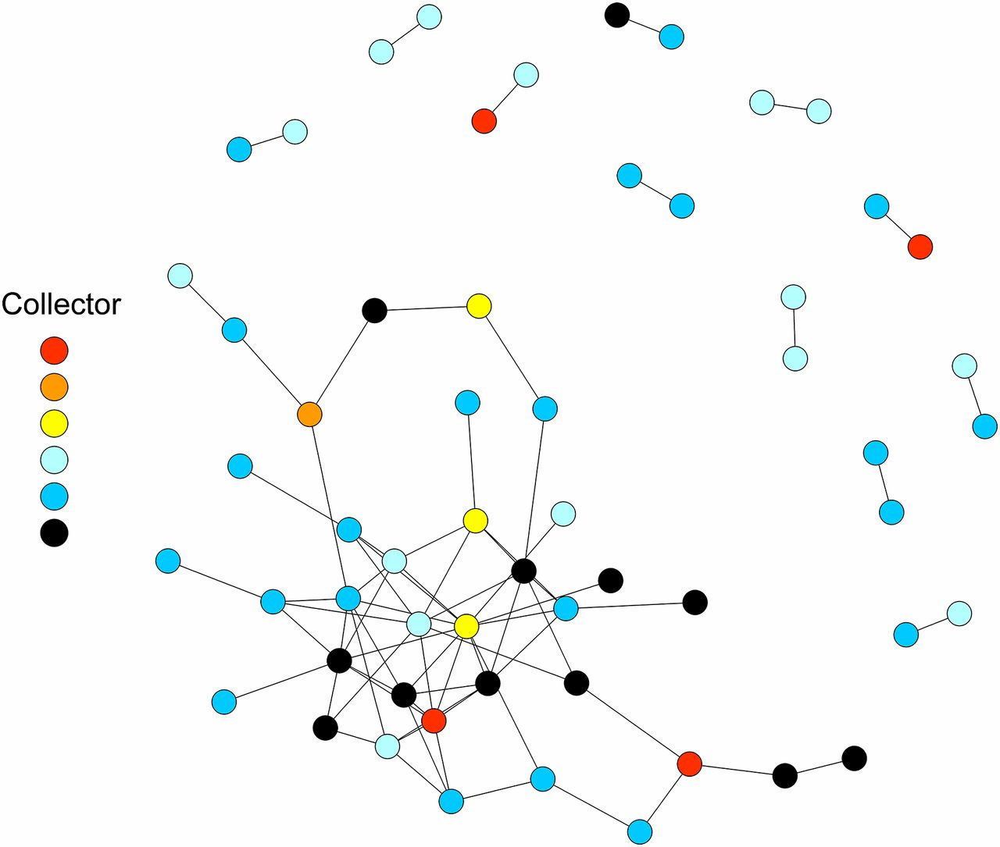
Abstract: Pelagic dispersal of most benthic marine organisms is a fundamental driver of population distribution and persistence and is thought to lead to highly mixed populations. However, the mechanisms driving dispersal pathways of larvae along open coastlines are largely unknown. To examine the degree to which early stages can remain spatially coherent during dispersal, we measured genetic relatedness within a large pulse of newly recruited splitnose rockfish (Sebastes diploproa), a live-bearing fish whose offspring settle along the US Pacific Northwest coast after spending up to a year in the pelagic environment. A total of 11.6% of the recruits in a single recruitment pulse were siblings, providing the first evidence for persistent aggregation throughout a long dispersal period. Such protracted aggregation has profound implications for our understanding of larval dispersal, population connectivity, and gene flow within demersal marine populations.
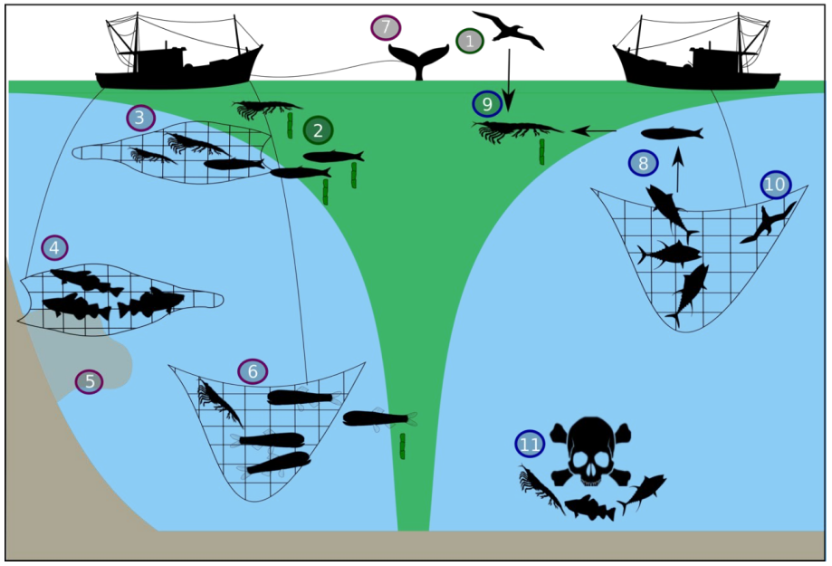
Abstract: The Workshop on Assessing the Impact of Fishing on Oceanic Carbon (WKFISHCARBON) was set up to provide ICES and stakeholders with a summary of knowledge on the role of fishing in the process of carbon budgets, sequestration and footprint in the ocean. The workshop addressed the potential impact of fishing on the biological carbon pump (BCP), the possible impacts of bottom trawling on carbon stores in the seabed, as well as considering emissions from fishing vessels. The overall aim was to generate proposals on how to develop an ICES approach to fishing and its role in the ocean carbon budget, and to develop a roadmap for a way forward. The main findings were that knowledge of the BCP in the open ocean was reasonably well developed, but that key gaps existed. In particular, information on the biomass of mesopelagic fish and other biota, and of some of the key processes e.g. fluxes and fish bioenergetics. Knowledge is much weaker for the BCP in shelf seas, where the bulk of fishing occurs. In particular, while biomass of fish was often well quantified, unlike the open ocean, the understanding of the important processes was lacking, particularly for the fate of faecal pellets and deadfall at the seabed. There is extensive scientific knowledge of the impact of fishing on the seabed, but what is un-clear is what it means for seabed carbon storage. There have been numbers of studies, which give a very divided view on this. There has also been open controversy about this in the literature. Physical disturbance to the seabed from fishing can affect sediment transport and has the potential to facilitate remineralization, but precise impacts will depend on habitat, fishing métier, and other environmental factors. From this, it is clear that more research is needed to resolve the controversy, and to quantify the impacts from different fishing gears and on different substrates or habitats in terms of carbon storage. There has been much more research on minimizing fuel use by fishing vessels, and hence emissions, but this has mainly focused on fuel efficiency, fuel use per unit of landed catch, and less on the total emissions. Baselines for fuel use are available at the global level, but are lacking at the national and vessel level. There is a need for standardization of methodologies and protocols, and for improving the uptake of fuel conservation measures by industry, as well as for improving the uptake of existing and potential fuel conservation and efficiency measures by industry. Finally, a roadmap was proposed to develop research and synthesis, on the understandings of the processes involved, the metrics and how to translate this into possible advice for policy-makers. To that end, a further workshop was proposed in 2024.
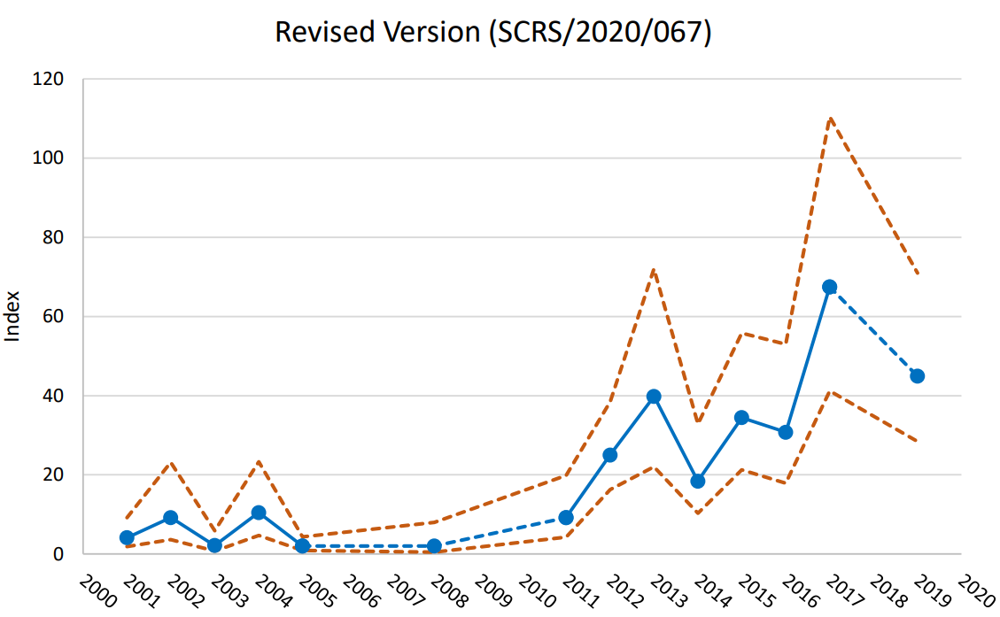
Abstract: This document presents the update of the bluefin tuna larval indices from the Balearic Archipelago (Western Mediterranean). The two indices are the “strict updated” developed in 2019 (SCRS/P/2019/055) and the Revised Version, presented to the Group in May 2020 (SCRS/2020/067). The main differences between the two indices are the methods applied to compute the mean and dispersion of the two stage models, and the years included in each index. The revised version interpolates the larval indices for the years 2008 and 2011 for which some icthtipplanton surveys are available. The two indices are updated here with data from 2019 but excludes the 2018 year.
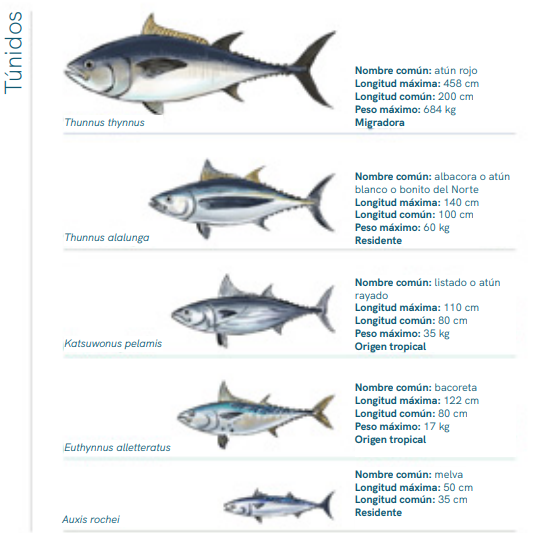
Abstract: El área marina que rodea el archipiélago balear es una zona clave para la ecología reproductiva de diferentes especies de atún y otros grandes migradores oceánicos.1 Entre ellas se encuentran especies residentes en el Mediterráneo, como es el caso de la albacora, la melva o el bonito, y otras que pasan gran parte de su vida adulta en el Atlántico y realizan largas migraciones para reproducirse aquí, como por ejemplo el atún rojo.
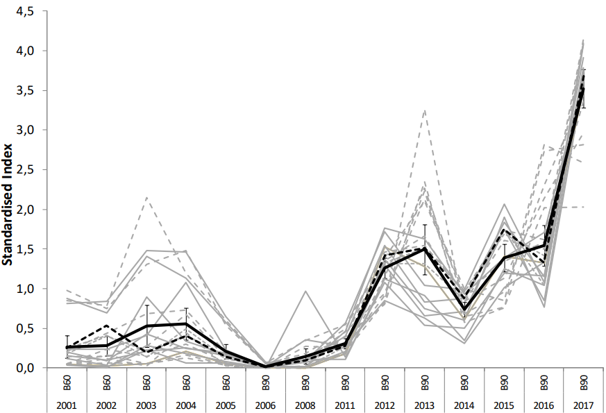
Abstract: The main objective of this study is to provide the knowledge to design adequate sensitivity analyses on the assessment models used for the Eastern stock of Bluefin tuna. We analyze how different configuration for the same environmental variable (temperature in the mixed layer depth) and different modeling approaches (nonlinear Delta-log, delta-gamma, tweedy and bayesian) affects to the variability of the larval indices of the Eastern bluefin tuna from data collected in the Balearic Sea (Western Mediterranean). We also investigate the effects on the index caused from having differences in the total sampled area among years. We used these results to interpolate larval index values in years with not standard larval surveys but with some ichthyoplankton surveys available, and to propose a “revised version” of the index providing parameters of uncertainty.
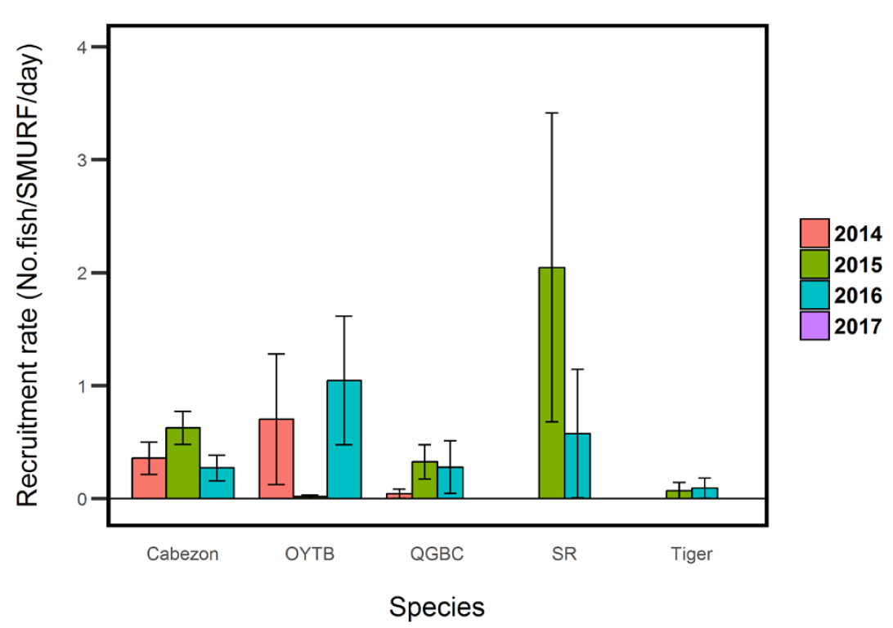
Abstract: With marine reserves being a new management tool here in Oregon, the Oregon Legislature has called for an evaluation of the Oregon Marine Reserves Program and a report to the Legislature due on March 1, 2023. This evaluation will reflect upon all aspects of the Program including the management, scientific monitoring, outreach, community engagement, compliance, enforcement, and funding for the five marine reserve sites. It also marks a point where the state will consider if and how marine reserves will continue to be used as a nearshore resource management tool moving into the future. Evaluation of the Oregon Marine Reserves Program will begin in the year 2022, and will be led by an Oregon public university selected by the Scientific and Technical Advisory Committee (STAC). The Oregon Department of Fish and Wildlife’s (ODFW’s) Marine Reserves Program is being tasked with writing a synthesis report, that covers all aspects of the program, in the year 2021 that will be submitted to the university for the evaluation.